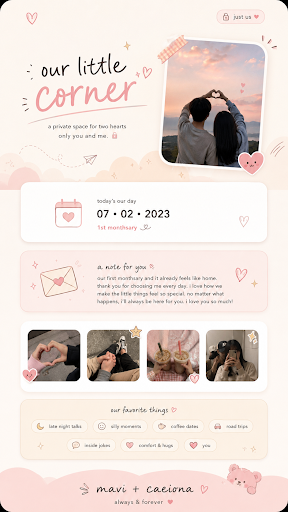
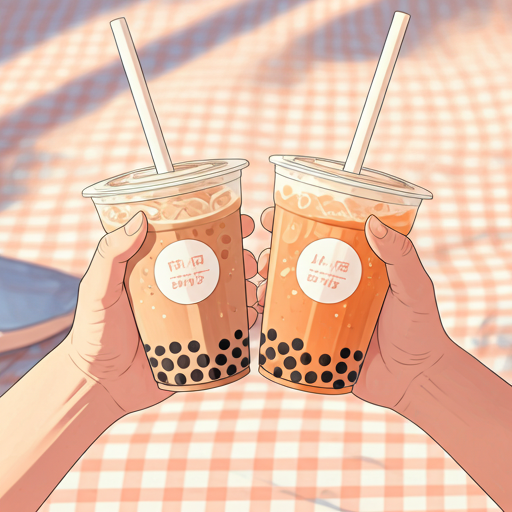
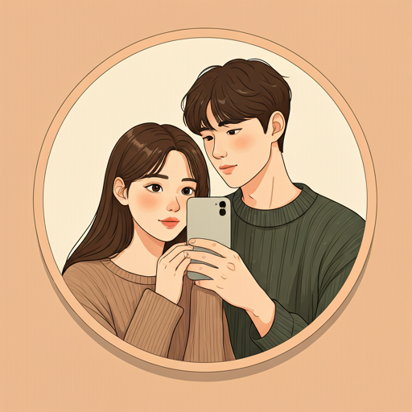

favorite
star
favorite
colors_spark
favorite
auto_awesome
a private space for two hearts
only you and me. lock

favorite
calendar_month
today's our day
07 • 02 • 2023
1st monthsary favorite
soft playlist queued: late-night talks, coffee dates, and that little forever feeling.
mail
a note for you favorite
our first monthsary and it already feels like home. thank you for choosing me every day. i love how we make the little things feel so special. no matter what happens, i'll always be here for you. i love you so much!
favorite
star


auto_awesome
our favorite things favorite
dark_mode
late night talks
mood
silly moments
local_cafe
coffee dates
directions_car
road trips
chat
inside jokes
favorite
comfort & hugs
favorite
you